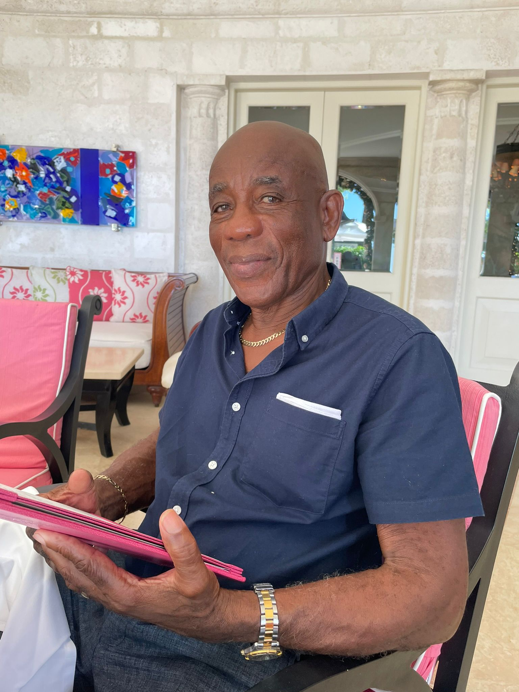

← All obituaries
Colin

In loving memory
Colin
Roosevelt Mascoll
Aged 83 · Entered rest Friday, April 24th, 2026
In memory
Remembered with love by family and friends.
Of #14 Garner Drive, Enterprise Gardens, Christ Church and formerly of the United Kingdom.
Family
- Beloved son of the late Olga Mascoll and Andrew Howard.
- Devoted husband of Shirley Mascoll.
- Loving father of Michael Graham, Andrea Whiteley, Fabian Mascoll, Martin Hardman and the late Arleigh Walcott (All of the UK)
- Cherished grandfather of Kyle Whyte, Kitwana, Bejide & Aisha Kafele, Lewis Whiteley, Evie & Freya Graham, Ava & Lucia Hardman (All of the UK).
- Great-grandfather of 5.
- Father-in-law of Susie Graham, Hartley Whiteley and Caroline Hardman (All of the UK).
- Dear brother of Myrtle Husband, Celestine Green, Undine, Donavere & Jeffrey Mascoll and the late Celia Gill (USA) and Pamela Scantlebury.
- Uncle and great uncle to many
- Nephew of the late Carmine St. Clair (UK), Carlotta Wiltshire (UK), Isabella Mascoll and Courtney Mascoll.
- Brother-in-law of Felicia Mascoll, Sonia, David & Robert Griffith.
- Son-in-law to Vivienne Griffith and Walton Doyle
- Relative of the Howard, Spooner, Barrow and Howell families.
- Friend of Michael Moseley, Tyron Browne & Gloria Mascoll (All of the UK), Henderson Jordan, Emerson Alleyne, The Oistins Domino Crew and the late Maxine Huddlestone (UK).
Whenever you need us
We’re here, 24 hours a day.
When you are ready to talk, a caring member of our team is only a call or message away.